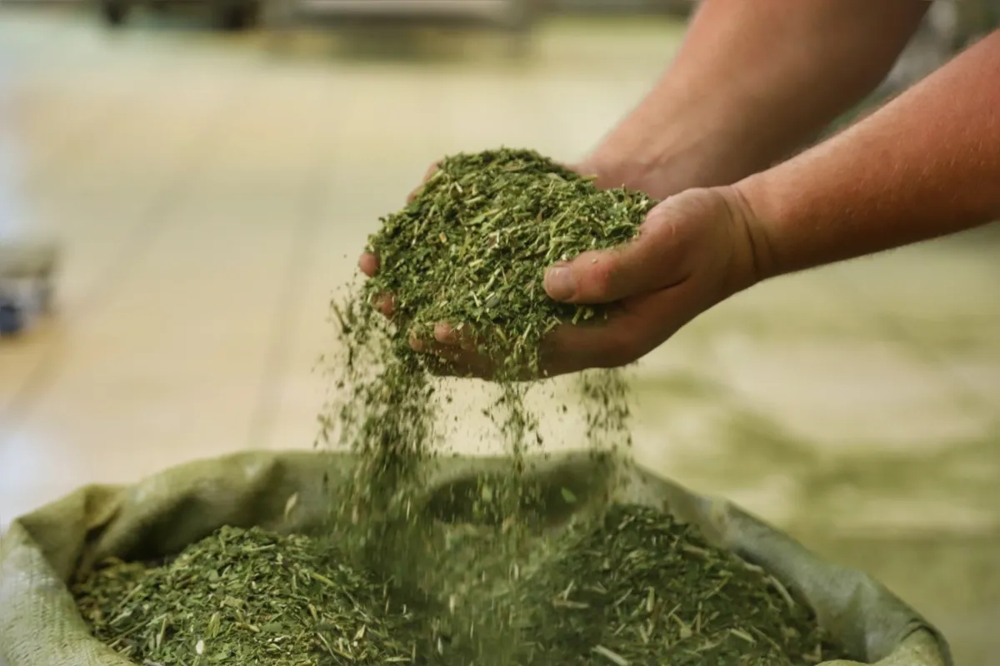
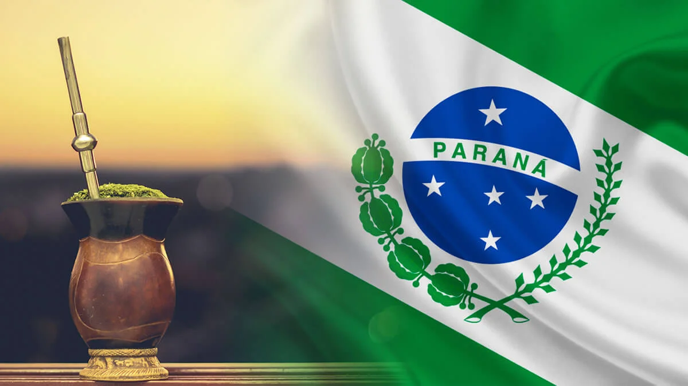
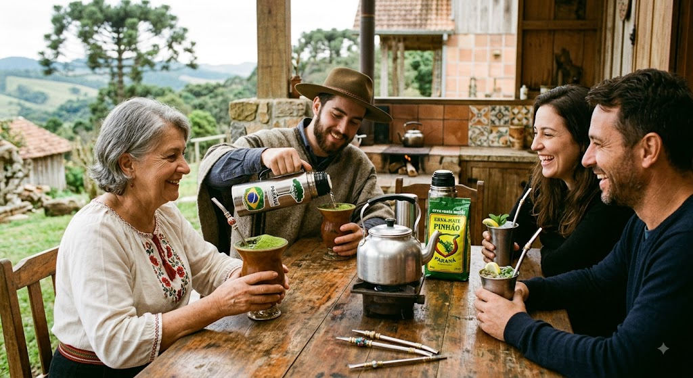
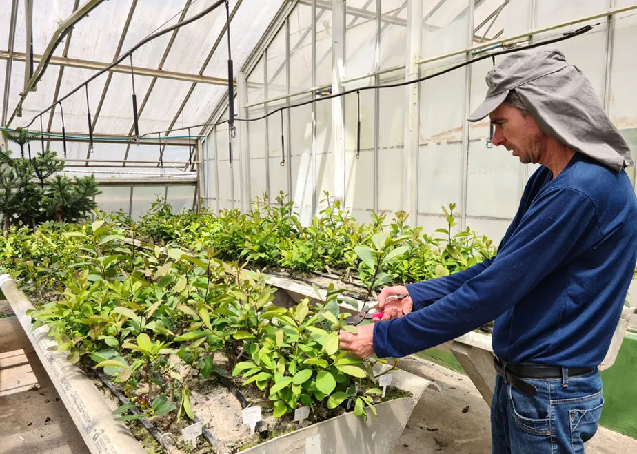

Como a Erva-Mate Moldou o Paraná
A história da erva-mate no Paraná é ainda mais fascinante e rica do que parece à primeira vista. Muito antes de se transformar naquele tradicional hábito diário de compartilhar o chimarrão quente ou o tereré gelado com os amigos, a planta já tinha um valor profundo e sagrado para os povos indígenas Guarani e Kaingang, que conheciam bem as suas propriedades. Com o passar do tempo, os tropeiros e colonizadores também perceberam o enorme potencial econômico daquela folha. Não demorou para que a erva-mate se tornasse a principal fonte de riqueza e comércio da região durante o século XIX. Apelidada de "ouro verde", essa riqueza impulsionou o desenvolvimento do estado de forma extraordinária: financiou a construção de estradas, estimulou a urbanização de diversas cidades e teve um papel fundamental até mesmo no processo que levou à emancipação política do Paraná.

O Contexto Histórico da Erva-Mate no Paraná
Para entender de verdade como o Paraná se transformou no estado forte que é hoje, basta olhar para a história da erva-mate. Tudo começou muito tempo atrás, quando os povos indígenas Guarani e Kaingang já dominaram o cultivo, o preparo e os segredos do uso da planta, muito antes de qualquer contato europeu. Com a chegada dos colonizadores, essa tradição milenar foi assimilada e rapidamente enxergada como uma oportunidade de ouro. O resultado? No século XIX, a erva-mate deixou de ser apenas um consumo local para se transformar em um mercado gigantesco e altamente lucrativo. Essa folha deu tanto retorno econômico que funcionou como o verdadeiro combustível para a emancipação política do Paraná em 1853, trazendo os recursos necessários para erguer as primeiras grandes cidades, abrir estradas e estruturar todo o estado.

A Força Cultural da Erva-Mate no Paraná
A erva-mate no Paraná vai muito além de ser apenas uma bebida para passar o tempo: ela é a verdadeira essência da cultura e da identidade paranaense. Esse costume profundo, herdado dos povos indígenas e preservado ao longo dos séculos, transformou-se em um poderoso símbolo de união que continua sendo passado com orgulho de geração em geração. Seja para esquentar as manhãs frias de inverno com um chimarrão bem quente ou para espantar o calor do verão com um tereré trincando de gelado, o ritual de juntar o pessoal para jogar conversa fora e "rodar a cuia" é a forma mais autêntica que o paranaense tem de demonstrar hospitalidade, amizade sincera e um carinho enorme pelas suas origens.

Como o Ciclo da Erva-Mate Levantou o Paraná
O Ciclo da Erva-Mate marcou o período de maior prosperidade e auge econômico do Paraná entre os séculos XIX e XX, elevando essa planta nativa a um patamar extraordinário. O negócio deu tão certo que a produção e as exportações dispararam, atraindo um volume inédito de capital para a região e transformando a economia local de forma definitiva. Foi justamente essa "era de ouro" que financiou grandes obras de infraestrutura como a impressionante e histórica ferrovia Paranaguá-Curitiba, pagou pela construção de palácios imponentes no centro da capital e forneceu o verdadeiro empurrão financeiro que o estado precisava para se modernizar, erguer suas instituições e se estruturar de verdade.

Curiosidades
Curiosidade 1: De ritual indígena a hábito europeu
Os colonizadores espanhóis foram os primeiros europeus a experimentar a erva-mate ao chegarem à América do Sul. Embora inicialmente houvesse resistência e preconceito, com alguns até chamando a bebida de “erva do diabo”, seu consumo logo foi incorporado ao cotidiano dos europeus. Curiosamente, as tentativas de proibição pelas missões jesuíticas entre os séculos XVII e XVIII acabaram por aumentar ainda mais o interesse pela erva. Com o tempo, os próprios jesuítas aprimoraram as técnicas de cultivo e processamento da planta, promovendo a expansão de seu comércio.
Curiosidade 2: A introdução da erva-mate no Paraná
Durante as disputas territoriais entre portugueses e espanhóis no século XVII, os portugueses se depararam com a erva-mate no planalto curitibano, onde os povos indígenas Kaingang já a utilizavam há gerações. Eles a chamavam de “congoin”, termo que aos poucos foi sendo substituído pela palavra “mate”. Esse contato marcou o início de uma longa trajetória comercial que consolidaria o Paraná como um dos principais polos de produção de erva-mate.